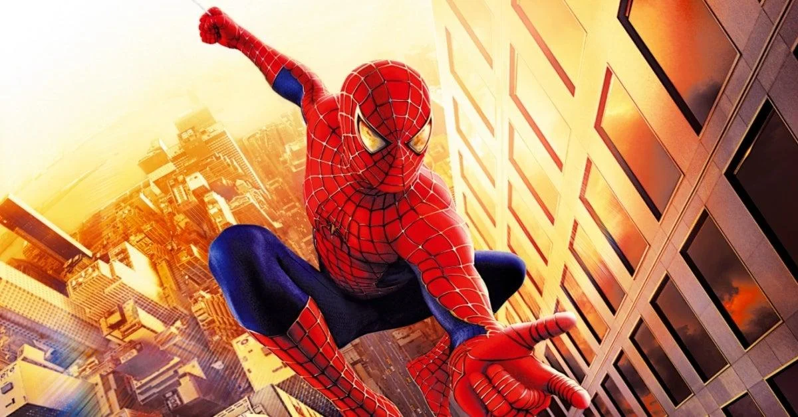

SPIDER-MAN MOVIES
Tobey Maguire- "the GOAT"
Tobey Maguire is the Spider-Man that I grew up with. The amount of nostalgia that I have surrounding the Sam Raimi Spider-Man trilogy is unquantifiable. His movies made me the Spider-Man fan that I am today. He is perfect at playing a dorky high schooler even though he looks way too old to be a highschooler. Tobey is just the classic Spider-Man in my opinion.
Andrew Garfield

Andrew Garfield is the second actor that I ever say play the role of Spider-Man on the big screen. I thought he did a good job, but I never got the same kind of charm from his performance as I got from Tobey's. I think that the studio made a lot of decisions that made it difficult for Andrew to have a good shot at having some awesome movies. He seemed to be too cool to play Peter Parker, but at the same time I thought he was really awkward in some scenes.
Tom Holland

Tom Holland is a great actor to play the role of a younger Spider-Man. He has a background in gynmasitics and is able to perform a lot of his own stunts. You can see Tom's physical mannerisms whenever Spider-Man is on screen. Being able to bring that personality to the character not only emotionally, but also physically is super cool and respectable in my opinion. I think he has great chemistry with all of the other MCU characters as well.
MY MOVIE RANKINGS
| 1. Into The Spider-Verse |

|
2. Spider-Man (2002) |  |
|---|---|
| 3. Spider-Man 2 (2004) |

|
| 4. Spider-Man 3 (2007) |

|
| 5. No Way Home |

|
| 6. Far From Home |

|
| 7. Homecoming |

|
| 8. The Amazing Spider-Man | |
| 9. The Amazing Spider-Man 2 |
MY MOVIE REVIEWS
Into The Spider-Verse
This movie is flat out fantastic. The plot is compelling on multiple levels. Not only is it a fun superhero movie, but it introduces people to one of my favorite Spider-Man characters, Miles Morales. This movie was also revolutionary for animated films and has one multiple awards for all of the ground breaking animation styles pioneered in this film.
Spider-Man (2002)
This film was my favorite film of all time for a while. I grew up with this movie and I have seen it upwards of 20 times. I think this movie is timeless. There is so much heart put into this movie and it really shows. I think all the special effects are absolutely incredible especially when you consider the film is over 20 years old now.
Spider-Man 2 (2004)
This is widely regarded as the best Spider-Man movie for multiple reasons. Firstly, it is one of the few times a sequel movie has actually lived up to the hype and delivered a story equally as compelling as the first. The villain in this film, Doc Ock, is fantastic. One of the best written comic book villians in my opinion.
Spider-Man 3 (2007)
A lot of people hate this movie and think it is super bad, and I will be honest, they are pretty valid in thinking that. I just always have such a great time watching this movie. It is so fun. It is stupid, and falls short in the plot and writing areas, but I think that if you can take the movie at face value you will get a lot of entertainment and joy from watching this movie.
No Way Home
The move is so cool. I never thought I would ever get to see Tobey or Andrew on screen as Spider-Man ever again, let alone their respective villains. The whole vibe of this movie is so fun. I love the interactions between all the different Spider-Men and their ability to relate to eachother even though they are from totally different universes. I think that all of the Spider-Man and Doctor Strange scenes are super cool too. The special effects are insane in this film.
Far From Home
This again was a very succesful sequel to the MCU Spider-Man triliogy. It introduced us to a classic comic book villian, Mysterio, but with a modern twist. He uses projector drones to make fake realities that he uses to trick people into thinking he is a hero. That is a really cool concept to me. I also love Jake Gylenhall's performance. He does a great job of playing someone who is always one bad day from going completely off the rails.
Homecoming
I think this movie is overall pretty good. They didn't waste time with making another origin story. We all know Peters story. This movie had an interesting aspect to it in the sense that it was tied to the already well established MCU and featured characters like Iron-Man and Happy Hogan. This movie does a good job setting up the MCU's version of Peter Parker, and the story leaves a lot of room for him to grow up and mature in future movies.
The Amazing Spider-Man
This movie is okay. I think that the Spidey suit is pretty cool. I don't like the part where Peter goes looking for revenge trying to find the man that killed Uncle Ben. He ends up just mugging a bunch of guys that didn't do it, and that doesn't really align with the character of Spider-Man in my opinion. There are a lot of shortcomings with this film.
The Amazing Spider-Man 2
Honestly, the only good thing I can say about this movie is that I like the way that the Spidey suit looks. It is very comic accurate and cool. However, the plot of this movie is just plat out stupid. It also tries to jugle multiple villians which always proves to be difficult to do in a 2 hr film setting.